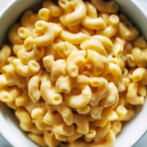

Mac And Cheese

Your favourite comfort food in 10 minutes
Ingredients
- 1 pound uncooked elbow pasta
- 4 cups water
- 1 tsp salt
- 3 tbs butter
- 2.5 cups shredded cheese
- 0.5 cup whole milk
Steps
- Put pasta,water and salt into pot and cook for 4 minutes
- Drain and gently stir in butter until melted. Add cheese and milk(2-3 tbs at a time)
- Add seasoning to taste and let it sit for 10 minutes
- Enjoy!